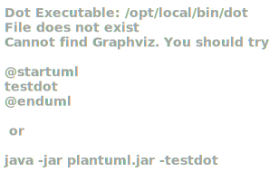

Getting started
You will use Markdown and PlantUML to describe a software architecture model about your own project.
This document will grow during the semester as you sketch and refine your software architecture model.
When you are done with each task, please push so we can give you feedback about your work.
We begin by selecting a suitable project domain.
1. Domain Selection
Submit the name and brief description (about 100 words) of your domain using the following vision statement template:
For [target customers]
Who [need/opportunity/problem]
The [name your project]
Is [type of project]
That [major features, core benefits, compelling reason to buy]
Unlike [current reality or competitors]
Our Project [summarize main advantages over status quo, unique selling point]
Please indicate if your choice is:
- a project you have worked on in the past (by yourself or with a team)
- a project you are going to work on this semester in another lecture (which one?)
- a new project you plan to build in the future
- some existing open source project you are interested to contribute to
The chosen domain should be unique for each student.
Please be ready to give a 2 minute presentation about it (you can use a slide but it's not necessary)
Project Name: Tag4You
Project Type: Potential future project
Vision Statement:
Companies whose service is to offer a large number of individual items, such as amazon and netflix, require a way for users to find the item(s) they want or need among the many on offer. One way for customers to do so is using tags: products are tagged with specific properties that a user can be interested in. For example: netflix tags some movies as "romantic". Users interested in romantic movies can search for that and get a list of movies they're interested in. Unfortunately, these systems are often sorely lacking and provide far too little granularity. For example, Netflix only provides a few dozen tags and there is no way to search for a movie with "female protagonist" or "gay love" or "urban fantasy". Furthermore, most companies only offer positive search and do not allow customers to exclude items with certain attributes. Tag4you offers a simple and rapid interface to accomplish all of that. Let us imagine a world in which instead of writing "fantasy movie" into netflix's search bar and being presented with a list of sci-fi TV series, I can write "high fantasy, strong female protagonist, no romance, good music, score > 8, length < 120" and get a movie I actually want to watch instead of the one I have to.
Additional Information: The advantage of using Tag4You instead of developing the system in-house is clear: not only do you save on development costs and time, the end product is also more stable, feature-rich and provides a uniform query language which users are used to from other companies using our services.
2. Architectural Decision Records
Software architecture is about making design decisions that will impact the quality of the software you plan to build.
Let's practice how to describe an architectural decision. We will keep using ADRs to document architectural decisions in the rest of the model.
Use the following template to capture one or more architectural design decisions in the context of your project domain
Architectural Decision Record Template
ADR #0 (Template)
- What did you decide?
Give a short title of solved problem and solution
- What was the context for your decision?
What is the goal you are trying to achieve?
What are the constraints?
What is the scope of your decision? Does it affect the entire architecture?
- What is the problem you are trying to solve?
You may want to articulate the problem in form of a question.
- Which alternative options did you consider?
List at least 3 options
- Which one did you choose?
Pick one of the options as the outcome of your decision
- What is the main reason for that?
List the positive consequences (pros) of your decision:
- quality improvement
- satisfaction of external constraint
If any, list the negative consequences (cons)
- quality degradation
- What did you decide?
Programming language: C++
- What was the context for your decision?
A key characteristic for a tagging system is performance. Users expect low-latency answers to their queries. Moreover, the operation is in general rather expensive and many similar systems in the wild impose constraints on their users due to suboptimal performance, such as only allowing a limited number of tags per query. For that reason, the system must be built with performance in mind from the beginning. That starts with the choice of programming language. We choose C++ due to its high runtime performance. This choice will affect the entire development process.
- What is the problem you are trying to solve?
How can we increase run-time performance?
- Which alternative options did you consider?
Java, JavaScript, C++, C, Ruby
- Which one did you choose?
C++
- What is the main reason for that?
Java and JavaScript are both popular languages for building web applications, but they are both significantly less performant than C++. C has similar performance as C++, but less powerful language features and libraries, giving us less flexibility later in the process. Ruby is also in use for web development, but our programmers (i.e. me) do not have much experience with it, leading to a greater chance of bugs and increased development time due to the requirement of learning the language. Performance impact of Ruby is unknown but very unlikely to be greater than C++.
C++ as a language is said to be harder to learn and develop in than other languages, however, our programmers (me) have experience with it already and should not find much trouble using it.
- What did you decide?
API: RESTful
- What was the context for your decision?
Our goal for commercialisation is to give access to this service to other entities, which requires ease of interface. The easier it is to interface with our system, the greater the likelihood that a potential customer will choose to employ our services. A REST API will make it easy for customers to connect to our systems. Most of the process will be unaffected by this decision - the core system still remains the same, only the layer which interfaces with the network is constrained by the type of API to provide.
- What is the problem you are trying to solve?
How can we make it as simple as possible for clients to interface with us?
- Which alternative options did you consider?
REST API, custom protocol, both
- Which one did you choose?
REST API
- What is the main reason for that?
REST APIs are commonplace and as such many programmers know well how to use them and many platforms have components, libraries or frameworks which allow interfacing with such an API easily. Particularly so in the space of web applications, which are always at least in part written in JavaScript, which is capable of interfacing with REST APIs natively. A custom API would allow us more flexibility, but come with a higher learning curve and implementation cost for clients. Some clients might find it easier to send and receive simpler messages instead of having to package everything in HTTP requests, but they are outnumbered. Implementing both and allowing connections to either would maximise the affordability for our clients, but increase the size and cost of the system, thus we choose against it. However, it is possible to add the second API later on, without significantly increased costs, so we choose to keep the option open and not perform any action that would permanently rule out the possibility of implementing a custom API, so that we may opt to do so if it appears that we still have some resources left after all essential components have been implemented, or as a way to grow after launch if the product is successful enough.
- What did you decide?
Commercialisation: software as a service
- What was the context for your decision?
In creating this system we must consider how to make it profitable, or at least not unprofitable. Thus it is necessary to consider how we sell it. We choose a software as a service model as that allows us to profit continuously from every client. This requires us to expend additional resources to deploy and maintain the system, but gives us greater control of the platform we are deployed on, decreasing the requirements on portability.
- What is the problem you are trying to solve?
How do we make money from this?
- Which alternative options did you consider?
one-time purchase of software package, software as a service
- Which one did you choose?
software as a service
- What is the main reason for that?
In the software as a service model, every client is a continuous revenue stream, allowing us to profit continuously as long as they keep using our service. It also increases attractivity by decreasing the burden on the clients for deploying the system, though at the cost of an increased expense. We have determined that the pros should outweigh the cons for our clients, as the kind of system which can benefit from a tagging system is one which contains large a volume of content and therefore must already be at a minimum scale, implying high availability of resources for the client and therefore greater affordibility of the cost of our service. The SaaS model also increases affordability for a client who is not sure whether they really need our service in the long term, or has limited initial investment, as it comes with a reduced up-front cost. This model will require us to maintain our own servers to run the system on, but with an appropriate pricing strategy we can ensure the cost of that is outweighed by the increased profits. Furthermore, full control of the platform on which we deploy reduces the burden of ensuring portability of our system, reducing the amount of work that is necessary before we become profitable.
Deploying our software on a separate server from our clients' machines comes with the cost of increasing latency between queries and responses, but modern network speeds reduce it to an acceptable amount and using dedicated hardware counteracts this effect by avoiding increased processing times due to suboptimal hardware configurations or systems overloaded by other software running on the same machine.
3. Quality Attribute Scenario
Pick a scenario for a specific quality attribute. Describe it with natural language.
Refine the scenario using the following structure:

Stimulus: condition affecting the system
Source: entity generating the stimulus
Environment: context under which stimulus occurred (e.g., build, test, deployment, startup, normal operation, overload, failure, attack, change)
Response: observable result of the stimulus
Measure: benchmark or target value defining a successful response
Maximum Latency
Quality: Performance (Latency)
Scenario: Answers to client requests should be transmitted no more than 100ms after reception of the query

Note that precise numbers in this and other scenarios are based on a very basic understanding on my part of the possibilities involved
Mutation Visibility
Quality: Correctness
Scenario: Changes to tags may take up to 60 min. for full propagation

Responsiveness to write queries is not a high priority and may be sacrificed in exchange for performance of read queries or scalability.
This type of Correctness is also known as Read-Write Consistency.
Influence on client data
Quality: Ethics
Scenario: Weight of tags and order of result must be based entirely on objective properties of the data (such as creation date) or user-defined criteria. The system may not influence, algorithmically or by admin intervention, the results of a query.

"The algorithm" must not influence results beyond the obvious or explicitly requested manner.
Intuitiveness of query language
Quality: Usability
Scenario: User should succeed in submitting the query they have in mind in less than 3 attempts.

The query language must be learnable quickly
Failure Mode
Quality: Safety
Scenario: System should not return incorrect or incomplete results

Failures must be transparent - if the user believes an action succeeded, it must truly be so.
Attack recovery
Quality: Recoverability
Scenario: Following a successful attack it should be possible to restore data to a known good state and resume operation within 1 day

Intrusion must be detected and defeated within a day. Furthermore, logs and backups must be kept to allow rapid restoration of the system to a state it was in before the attacker had access to it.
DoS attack resilience
Quality: Availability
Scenario: System should be able to withstand a targeted denial of service attacks from at least 1000 unique IPs per minute without interrupting operation for regular users

Increased response times and aggressive throttling are unavoidable, but users must not be prevented from making queries completely for attacks below a certain scale. (Actually I have no idea what scale of attack is realistic, 1000IP/m is a very rough guesstimate)
User logs
Quality: Defensibility
Scenario: System should keep logs of all users and respective write queries.
Activity logs help in detection of and recovery from attacks and credential leaks both for our service as a whole and for our clients' individual databases
- This may also be called Auditability.
- The Event Sourcing pattern helps to deliver it.
4. Quality Attribute Tradeoff
Pick a free combination of two qualities on the map and write your name to claim it.
Then write a short text giving an example for the tradeoff in this assignment.
Privacy vs. Defensibility
Keeping high-detail logs of everything that goes on on your system and everything that your users do is very useful for detecting and defeating intrusions as well as rolling back any changes that an attacker may have made, but it is a raises huge privacy concerns (also confidentiality but I had to choose one)
Defensibility vs. Simplicity
A simple system is easier to attack - complexity makes it more difficult to find and exploit vulnerabilities. That said, this is a tradeoff that is almost always heavily skewed towards simplicity - as we know, security through obscurity is not feasible. Moreover, simplicity has a lot of benefits on its own. Therefore, when we reduce simplicity to increase defensibility, it is always done in a later step, with a simpler system as a base, using code obfuscation and similar techniques.
Feasability vs. Usability
(actually affordability vs. accessibility but these two qualities were missing for some reason)
An important aspect of usability is accessibility - systems with low accessibility are extremely unusable for people with impairments. Hence, to increase usability, one must make their systems accessible. However, accessibility is expensive and will significantly increase the time required to develop your product, as well as the cost of doing so.
Note that this tradeoff has already been claimed by somebody else - when I wrote it I wasn't sure if all the tradeoffs had to be unique. For grading purposes, ignore this one.
Usability and Performance
Usability and performance go hand in hand - a system with bad performance is also unusable as users become annoyed at waiting times. This effect is especially strong when performance goes below user reaction speed - i.e. when they are thinking ahead of the program. When users write or press buttons faster than they are processed, the forced waiting interrupts their train of thought, worsening not only experience but also function
5. Feature Modeling
In the context of your chosen project domain, describe your domain using a feature model.
The feature model should be correctly visualized using the following template:
If possible, make use of all modeling constructs.
The root, Queries, Data modification, Access control, Content Tagging and Result presentation features are not optional and implemented by all competitors. One competitor, Netflix, has an extremely barebones implementation, with no other features added. Searching around for a bit I managed to find a competitor with a more interesting system to compare to: vndb.org, a database of visual novels. Their tagging system has the following additional features:
- Computer-readable format
- Weighted tags
- Tag aliases
- Sub-tags/categories
- Tag attributes e.g. spoiler
- Tag filter
- Sorting
- Client-supplied attributes (except of course they are themselves the client)
- Paging
- Variable page size
6. Context Diagram
Prepare a context diagram to define the design boundary for your project.
Here is a PlantUML/C4 example to get started.

Make sure to include all possible user personas and external dependencies you may need.

7. Component Model: Top-Down
Within the context of your project domain, represent a model of your modular software architecture decomposed into components.
The number of components in your logical view should be between 6 and 9:
- At least one component should be further decomposed into sub components
- At least one component should already exist. You should plan how to reuse it, by locating it in some software repository and including in your model the exact link to its specification and its price.
- At least one component should be stateful.
The logical view should represent provide/require dependencies that are consistent with the interactions represented in the process view.
The process view should illustrate how the proposed decomposition is used to satisfy the main use case given by your domain model.
You can add additional process views showing how other use cases can be satisfied by the same set of components.
This assignment will focus on modularity-related decisions, we will worry about deployment and the container view later.
Here is a PlantUML example logical view and process view.


Logical View

Process Views
8. Component Model: Bottom-Up
Within the context of your project domain, represent a model of your modular software architecture decomposed into components.
To design this model you should attempt to buy and reuse as many components as possible.
In addition to the logical and process views, you should give a precise list to all sources and prices of the components you have selected to be reused.
Write an ADR to document your component selection process (indicating which alternatives were considered).
Note: if I ever actually do this there's no way in hell I'll use all those things, but for the sake of the assignment, these are components that could in theory be reused.
- What did you decide?
Authentication Protocol: OAuth 2
- What was the context for your decision?
We have a need to authenticate users. The API for this must be secure, but easy to use and simple to implement. OAuth is an existing protocol designed for precisely these criteria. It is also the most popular one out there, meaning the programmers of our clients are likely used to it and will find it easy to implement the client side or re-use an existing library for that purpose. The rest of the project is largely independent of this choice, requiring only minor changes in the Client API component and an appropriate implementation in the Auth Service component
- What is the problem you are trying to solve?
How can we allow users to authenticate in an easy but secure manner?
- Which alternative options did you consider?
OAuth, Kerberos, own solution
- Which one did you choose?
OAuth 2
- What is the main reason for that?
OAuth is a more popular and widely supported protocol than Kerberos. Its age and popularity also makes it more robust than a self-designed protocol is likely to be.
- What did you decide?
Parser: Lexy
- What was the context for your decision?
Our users send us queries to retrieve data - as a string. In order to filter the data for an appropriate response, the string needs to be parsed into a format usable by the application. Lexy can be used for that. The impact of this choice is mainly in performance.
- What is the problem you are trying to solve?
How can we turn a query string into an object we can use to process data?
- Which alternative options did you consider?
Lexy, custom parser
- Which one did you choose?
Lexy
- What is the main reason for that?
Lexy is an open-source, freely-available parser which allows specification of grammars in a convenient C++ DSL. Using a library instead of building it ourselves saves a lot of work and provides a guarantee of performance.
Unfortunately, although performance is guaranteed to not be bad, it is also otherwise out of our control, meaning if we find it to be insufficient later on, we cannot do anything about it.
- What did you decide?
Deployment provider: AWS
- What was the context for your decision?
Given that we decided to run our software ourselves instead of selling it to clients as a package, we have the need for hardware to run it. A multitenant architecture means we'd also benefit from a scalable solution and that we can scale horizontally with little effort.
- What is the problem you are trying to solve?
Where will we run our software?
- Which alternative options did you consider?
AWS, fixed host, self-host
- Which one did you choose?
AWS
- What is the main reason for that?
Renting fixed machines from a provider would allow us to run our software at low cost, but makes it difficult to scale when we need more capacity to accomodate new or growing clients.
Self-hosting can be very expensive and would likely provide weaker guarantees on availability and failure recovery than outsourcing.
AWS is rather expensive as hosting goes due to its flexibility, but allows us to increase and decrease resources programmatically and quickly in response to client needs.
9. Interface/API Specification
In this iteration, we will detail your previous model to specify the provided interface of all components based on their interactions found in your existing process views.
choose whether to use the top down or bottom up model. If you specify the interfaces of the bottom up model, your interface descriptions should match what the components you reuse already offer.
decide which interface elements are operations, properties, or events.
Get started with one of these PlantUML templates, or you can come up with your own notation to describe the interfaces, as long as it includes all the necessary details.
The first template describes separately the provided/required interfaces of each component.

The second template annotates the logical view with the interface descriptions: less redundant, but needs the logical dependencies to be modeled to show which are the required interfaces.


openapi specification:
openapi: "3.0.2"
info:
title: Coeus API
version: "0.1"
paths:
/adm/collections:
post:
description: add a new collection
responses:
"200":
description: OK
"401":
description: NOT AUTHORISED
/adm/collections/{id}:
put:
description: edit a collection
responses:
"200":
description: OK
"401":
description: NOT AUTHORISED
get:
description: get a collection
responses:
"200":
description: OK
"401":
description: NOT AUTHORISED
"404":
description: NOT FOUND
delete:
description: delete a collection
responses:
"200":
description: OK
"401":
description: NOT AUTHORISED
"404":
description: NOT FOUND
/adm/users/{name}:
put:
description: add a new user or change their credentials
responses:
"200":
description: OK
"401":
description: NOT AUTHORISED
/collections/{id}:
get:
description: perform a query
parameters:
- in: query
name: q
schema:
type: string
description: the query
responses:
"200":
description: OK
"404":
description: NOT FOUND
post:
description: add a new item
responses:
"200":
description: OK
"401":
description: NOT AUTHORISED
"404":
description: NOT FOUND
/collections/{id}/{iid}
get:
description: get an item
responses:
"200":
description: OK
"401":
description: NOT AUTHORISED
"404":
description: NOT FOUND
delete:
description: delete an item
responses:
"200":
description: OK
"401":
description: NOT AUTHORISED
"404":
description: NOT FOUND
/collections/{id}/{iid}/{tag}:
put:
description: add or edit a tag on an item
responses:
"200":
description: OK
"401":
description: NOT AUTHORISED
"404":
description: NOT FOUND
delete:
description: remove a tag from an item
responses:
"200":
description: OK
"401":
description: NOT AUTHORISED
"404":
description: NOT FOUND
Two endpoints missing due to bug in the 'openapi to tree' app:
openapi to tree feedback:
It refuses to render the above document unless you comment the
/collections/{id}/{iid}pathThe main advantage of a tree structure is that it allows easy representation of deeply nested structures, but most APIs are very flat and won't be rendered very well by this.
The tool has tooltips, but they do not include any useful information. There should at least be the description and non-path parameters
If the tool is meant to be used by people new to openapi, better error messages would be nice
The colors of the get/post/put/delete markers do not provide enough contrast to the text, they should be less saturated
Occasionally the editor opens an autocomplete tooltip with no content, which it will never close again
This can be reproduced by opening a new instance in an incognito window (i.e. with the default text filled in), deleting the content of one of the autocompleted fields (e.g. "get") and quickly writing
po. The app will open an autocomplete tooltip onp, but if theocomes quickly enough, it will not manage to close it before the options list becomes empty, which seems to freeze it in placeThe viewer's zoom controls are too sensitive for macos scrolling (which is usually much more fine-grained than other platforms')
10. Connector View
Extend your existing models introducing the connector view
For every pair of connected components (logical view), pick the most suitable connector. Existing components can play the role of connector, or new connectors may need to be introduced.
Make sure that the interactions shown in the process views reflect the primitives of the selected connector
Using a new connector QQ (Query Queue) - an N-M connector which allows an arbitrary number of producers and consumers to add tasks to a queue. Producers will create a task and block until it completes. Consumers will pull an available task (which is then marked as "in progress") and, upon completion, produce a result. The result is returned to the producer that created the task, at which point the task is removed from the queue. Tasks that are marked in progress cannot be consumed by another consumer, but upon triggering a timeout, the status is reset (e.g. if the consumer that was working on it crashed). A consumer that attempts to pull a task while the queue is empty blocks until one is available.
- What did you decide?
API/Query Processor connector: Query Queue
- What was the context for your decision?
The system is required to process a large volume of queries, each of which is expensive to process, with minimal latency. Moreover, their availability is critical. If these two components fail, the entire system is down as they are part of the core service provided.
The outcome of this decision only affects the architecture of the two components involved.
- What is the problem you are trying to solve?
How can we connect API and Query processor so as to tolerate very high loads?
- Which alternative options did you consider?
Procedure call, tuple space, custom connector
- Which one did you choose?
Custom connector.
- What is the main reason for that?
Procedure calls are the most basic connectors, but they are direct 1-1 connectors. To increase the maximum load we can handle we require the ability to use multiple query engines and at some point perhaps even multiple client APIs simultaneously. Procedure calls do not provide this capability.
Tuple spaces provide n-m connectivity and the ability to block until data is available, but they are not made for synchronous use. A system can be engineered to make it work, by having the query processor create a tuple for the response and making the API attempt to read that immediately after publishing the request tuple, but it is not the intended use of a tuple space and makes it difficult to extend the connector with extra features like timeouts.
By creating a custom connector (the query queue) we have made a synchronous, indirect n-m connector with specialised features fit for our purposes.
The cost of developing it (in manpower, time and money) is added to the project, but will pay off in the long term as using a specialised connector makes development of client api and query processor easier and its increased power will enhance the quality of the final product (e.g. by allowing to scale to larger loads)
Process Views
11. Adapters and Coupling
- Highlight the connectors (or components) in your existing bottom-up design playing the role of adapter. (We suggest to use the bottom-up design since when dealing with externally sourced components, their interfaces can be a source of mismatches).
- Which kind of mismatch** are they solving?
- Introduce a wrapper in your architecture to hide one of the previously highlighted adapters
- Where would standard interfaces play a role in your architecture? Which standards could be relevant in your domain?
- Explain how one or more pairs of components are coupled according to different coupling facets
- Provide more details on how each adapter solves the mismatches identified using pseudo-code or the actual code
- How can you improve your architectural model to minimize coupling between components? (Include a revised logical/connector view with your solution)
** If you do not find any mismatch in your existing design we suggest to introduce one artificially.
Hints
(1) Should we find cases where two components cannot communicate (and are doing it wrongly) and highlight they would need an adapter?, or cases where we have already a "component playing the role of adapter in the view" and highlight only the adapter?
Both are fine. We assumed that if you draw a dependency (or a connector) the interfaces match, but if you detect that the components that should communicate cannot communicate then of course introduce an adapter to solve the mismatch
(2) Please show the details about the two interfaces which do not match (e.g., names of parameters, object structures) so that it becomes clear why an adapter is needed and what the adapter should do to bridge the mismatch
(5-6) These questions are about the implications on coupling based on the decisions you documented in the connector view. Whenever you have a connector you couple together the components and different connectors will have different forms of coupling
For example, if you use calls everywhere, do you really need them everywhere? is there some pair of components where you could use a message queue instead?
Regarding the coupling facets mentioned in question 5. You do not have to answer all questions related to "discovery", "session", "binding", "interaction", "timing", "interface" and "platform" (p.441, Coupling Facets). Just the ones that you think are relevant for your design and by answering them you can get ideas on how to do question 6.
There are no adapters in any of my logical views, not even in the bottom-up view since all the existing components talk to my components, never to each other, so my components can be built to accomodate their interface instead of creating a new one.
So I had to invent some:
-
Imagine the Client API did not offer a REST API but a proprietary solution which offers the following operations (yes I know that's a terrible API. Maybe that's why the adapter is necessary):
- setActiveCollection(id)
- [result_ids] query(query)
- item addItem(id, [tags])
- item getItem(id)
- removeItem(item)
- [tags] getTags(item)
- setTags(item, tags)
For simplicity we ignore authentication - assume that is either omitted or done before using an undocumented part of the API. Now a client wants to connect their application which uses the documented REST API with Coeus. An adapter is necessary.
- The mutation processor is meant to be a bit beefier than that, but we can pretend for the duration of this exercise that it is nothing more than an adapter which translates its operations into sequel queries to run on the database
The Client API adapter solves a mismatch between the connector type of Client API and the Client as well as a mismatch in the allowed operations: the operations of the REST API cannot be mapped directly to those of the proprietary API.
The Mutation processor also solves a mismatch between connector types, but in its case the operations can be mapped directly (for the purpose of this exercise I'm assuming the schema of the database follows the structure of the application)
The mutation processor cannot be hidden inside a wrapper as other components do access the database directly, without going through it, but the client API can be wrapped easily:
The SQL database uses a standard interface following the well-known SQL language, although caution must be taken since not all databases follow the standard strictly, and most also add non-standard components on top of it.
Further, the REST APIs, though not themselves a standard make use of other standards (JSON, HTTP...)
I will use the connection made through the query queue from the previous exercise as I think it'll make for an interesting and somewhat unusual example.
- Discovery is automatic - the client API simply submits a request without caring who fulfils it. Similarly, the query processor retrieves a request without knowing who it cames from - it is the query queue that decides which instances of the two components are put together.
- The query queue is stateful - although every message from the Client API is independent of the previous messages, the messages from the query processor depend both on the previous messages from the CAPI and on the previous messages from the processors.
- The binding is early - the components are hardcoded to depend on each other.
- Interaction is indirect - CAPI and processor never talk to each other directly, only passing messages through the queue.
- Timing, unlike in a regular message queue, is synchronous. The CAPI cannot resume until its request has been fulfilled by an instance of the query processor.
- Both components depend on the Query Queue. If its API-side interface changes, so must the client API. Same for the processor's side. Schema changes most likely involve both sides and require changes in all components. Client API and Query Processor, however, are free to change in any way without affecting the other components as they are not depended on by either the QQ or each other.
- The separation by the query queue allows CAPI and processor to be implemented separately and run on different machines. Even, in fact, multiple instances of the same component can run in parallel using different platforms. The query queue itself must, of course remain standardised. I hadn't thought about the exact method in messages are sent to the QQ when I invented it, but I would envision it as GRPC call or a protobuf message, which means that even if the QQ is deployed on a different platform, the other components are not affected.
Client API - REST adapter:
id_t[] get_collections(id, query) {
setActiveCollection(id);
return query(query);
}
id_t post_collections(id) {
setActiveCollection(id);
id_t item_id = createNewItemId();
addItem(item_id, {});
return item_id;
}
tuple<item_t, tag_t[]> get_collections(id, iid) {
item_t item = getItem(iid);
tag_t[] tags = getTags(item);
return {item, tags};
}
void delete_collections(id, iid) {
item_t item = getItem(iid);
removeItem(item);
}
void put_collections(id, iid, tag) {
item_t item = getItem(iid);
tag_t[] tags = getTags(item);
tags = tags.append(tag);
setTags(item, tags);
}
void delete_collections(id, iid, tag) {
item_t item = getItem(iid);
tag_t[] tags = getTags(item);
tags = tags.remove(tag);
setTags(item, tags);
}
Mutation processor adapter:
addItem(udd)
->
INSERT INTO items VALUES (udf_new_id(), udd.field1, udd.field2, ...)
removeItem(id)
->
DELETE FROM items WHERE item_id = id
getItem(id)
->
SELECT * FROM items, (
SELECT item_id, GROUP_CONCAT(tag_name + ': ' + tag_value) FROM tags WHERE item_id = id
GROUP BY item_id
) AS tags WHERE item.item_id = id AND item.item_id = tags.item_id
setTag(id, tag, value)
->
INSERT INTO tags VALUES (id, tag, value)
removeTag(id, tag)
->
DELETE FROM tags WHERE item_id = id AND tag_name = tag
I believe I have already minimised coupling among my components. The query queue does it for the most important two, but the others are also in a minimally-coupled state. No components share state and messages are independent from each other wherever reasonable (obviously not in the database). Binding and discovery among components is static, which I believe is reasonable as any components that are bound together are meant to run on the same machine as single instances. The auth service perhaps could be external, although I believe it still makes sense for that to be an RPC, perhaps using grpc, with a destination address in a configuration file. Anything more loose is a security vulnerability. Timing is synchronous in most cases with direct interactions, but that is necessitated by the performance constraints. It makes no sense to perform an operation to e.g. add a tag when there's nobody to execute it yet - the user is expecting feedback now. The interfaces are all internal so if it is necessary to change one, the other side can be adapted as well (except for the REST APIs, but there's not really a way around it - if the interface changes the clients will have to as well. Hence why interfaces usually don't change. The APIs can easily be extended to support new or changed operations without breaking the previous one though). Finally, the platform is, by necessity, fixed to be the same for all components. This is again a matter of performance. Due to the need for low-latency responses, we decided to implement everything in cpp running on the same machine. In order to accomodate higher throughput, an exception was made for the CAPI and the query processor, but these are still required to be running in very similar environments physically located close together to minimise performance loss.
12. Physical and Deployment Views
a. Extend your architectural model with the following viewpoints:
Physical or Container View
Deployment View
Your model should be non-trivial: include more than one physical device/virtual container (or both). Be ready to discuss which connectors are found at the device/container boundaries.
b. Write an ADR about which deployment strategy you plan to adopt. The alternatives to be considered are: big bang, blue/green, shadow, pilot, gradual phase-in, canary, A/B testing.
c. (Optional) Prepare a demo of a basic continuous integration and delivery pipeline for your architectural documentation so that you can obtain a single, integrated PDF with all the viewpoints you have modeled so far.
For example:
- configure a GitHub webhook to be called whenever you push changes to your documentation
- setup a GitHub action (or similar) to build and publish your documentation on a website
Container view:
Deployment view:
I repurposed the C4 notation since I could not find a puml library more appropriate for deployment views

- What did you decide?
Deployment Strategy: Shadow
- What was the context for your decision?
There are many deployment strategies each with different pros and cons. Our project is only planned to be deployed on a single instance, but requires constant availability. This choice will impact the quality of service for our clients as well as the cost of maintaining the system post-launch.
- What is the problem you are trying to solve?
How can we deploy our system while maximising availability and minimising risk?
- Which alternative options did you consider?
big bang, blue/green, shadow, pilot, gradual phase-in, canary, A/B testing
- Which one did you choose?
Shadow
- What is the main reason for that?
Our system only has a backend - a single instance. That means strategies like gradual phase-in which split the user base over multiple instances make no sense. Although the system could be duplicated to allow A/B testing over all components except the database, the usefulness of doing so is very limited considering the nature of the project (e.g. no user interface). For similar reasons, canary and pilot are not a good choice.
Big bang, although low-cost, is high-risk as it makes it impossible to revert changes which break the system. Blue/green solves that problem, but so does shadow and it has the additional benefit of allowing us to test the new system without exposing our users to it, so if something breaks we do not lose availability or data even temporarily. On the other hand, it is a very expensive option, requiring us to run multiple copies of the whole system, comparing results of the deployed system with the shadow system, duplicating the db on every release etc.
For this reason we have decided, depending on resource availability, to allow use of a more limited shadow system - for example running only one or a few collections on it or using it only for read operations, eliminating the need to duplicate the database. This decision will be made on a case-by-case basis on every release.
Another option that we do not plan to implement immediately but are keeping in mind for future expansion is a sort of canary deployment: Although the main system will keep its shadow strategy, developers using our service will appreciate the availability of a sandbox in which they can experiment with the API and features of our system without needing to use (and buy) a collection on the main system. If/when we implement such a sandbox, upon developing new features we will first deploy them in the sandbox. This will allow us to observe the system in use and fix any bugs we encounter, as well as gather data on how the new features are being used, which may inform decisions on how to tweak the features before they are fully released, at which point they become immutable as we must retain backwards compatibility on the main system.
13. Availability and Services
The goal of this week is to plan how to deliver your software as a service with high availability.
- If necessary, change your deployment design so that your software is hosted on a server (which could be running as a Cloud VM). Your SaaS architecture should show how your SaaS can be remotely accessed from a client such as a Web browser, or a mobile app
- Sketch your software as a service pricing model (optional)
- How would you define the availability requirements in your project domain? For example, what would be your expectation for the duration of planned/unplanned downtimes or the longest response time tolerated by your clients?
- Which strategy do you adopt to monitor your service's availability? Extend your architecture with a watchdog or a heartbeat monitor and motivate your choice with an ADR.
- What happens when a stateless component goes down? model a sequence diagram to show what needs to happen to recover one of your critical stateless components
- How do you plan to recover stateful components? write an ADR about your choice of replication strategy and whether you prefer consistency vs. availability. Also, consider whether event sourcing would help in your context.
- How do you plan to avoid cascading failures? Be ready to discuss how the connectors (modeled in your connector view) impact the reliability of your architecture.
- How did you mitigate the impact of your external dependencies being not available? (if applicable)
14. Scalability
Now that your architecture delivers your software as a service, let's redesign it so that it can scale!
Pick one scalability dimension: number of clients, size of input, size of state, number of dependencies
How well does your architecture scale along the chosen dimension? Where do you expect the bottleneck to be?
Modify your architecture to remove the scalability bottleneck you have identified (show both logical, process and deployment view) - consider whether the API/interface of the bottleneck component should be improved.
Write an ADR regarding the scalability pattern you have introduced.
Write an ADR regarding the issue of component discovery, choosing one of the alternatives: dependency injection vs. directory. Can you identify an existing component playing the role of directory/dependency injection container? Could you give an example of where you would need to add such component to facilitate dynamic component discovery?
15. Flexibility
Only dead software stops changing. You just received a message from your customer, they have an idea. Is your architecture ready for it?
Pick a new use case scenario. Precisely, what exactly do you need to change of your existing architecture so that it can be supported? Model the updated logical/process/deployment views.
Pick another use case scenario so that it can be supported without any major architectural change (i.e., while you cannot add new components, it is possible to extend the interface of existing ones or introduce new dependencies). Illustrate with a process view, how your previous design can satisfy the new requirement.
Change impact. One of your externally sourced component/Web service API has announced it will introduce a breaking change. What is the impact of such change? How can you control and limit the impact of such change? Update your logical view
Open up your architecture so that it can be extended with plugins by its end-users. Where would be a good extension point? Update your logical view and give at least one example of what a plugin would actually do.
Assuming you have a centralized deployment with all stateful components storing their state in the same database, propose a strategy to split the monolith into at least two different microservices. Model the new logical/deployment view as well as the interfaces of each microservice you introduce.